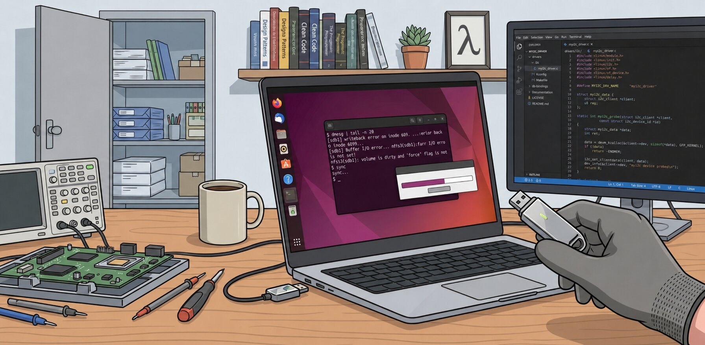

It Said "Copied": So Why Won't My USB Drive Let Go?

Most of the Ubuntu users eventually meets this moment: Ubuntu's file manager fills its progress bar, the dialog vanishes, and everything looks finished. Then you try to remove the drive and the machine refuses:
$ sudo eject /dev/sdb
eject: cannot open /dev/sdb: Device or resource busy
The next option we try is sync, but it hangs and never returns. udisksctl power-off throws the same brush-off:
$ sudo udisksctl power-off -b /dev/sdb
Error powering off drive: Error opening /dev/sdb for fsync: Device or resource busy (udisks-error-quark, 0)The copy reported success, but the device is somehow both finished and too busy to touch. That contradiction is not a bug in the file manager. It is the visible edge of a design decision that sits at the heart of the operating system — and, in this particular case, of a drive that quietly stopped answering halfway through the job. This article walks through exactly what happened, using one real crash log as the guide.
Why Ubuntu tells you the files have been transferred
The GUI telling you the copy finished wasn't lying. It was accurately reporting on the wrong layer. The kernel copies your data into a region of RAM called the page cache and reports success as soon as that copy is complete. The physical write to the much slower flash storage is scheduled for later, handled by background kernel worker threads. From the file manager's point of view, its job — getting the bytes into the kernel — really is done; it just isn't telling you that the kernel hasn't finished its part yet.
Think of posting a letter. You drop it into the post box and walk away knowing your part is done. But the letter has not yet reached its destination; it is somewhere in the postal system, waiting for collection and delivery. Your file manager's "100%" is the moment the letter leaves your hand, not the moment it arrives. In the same way, the kernel marks those cached pages as dirty — meaning they have been modified in memory but not yet written to storage — and hands them to background worker threads for eventual write-back. On a fast internal SSD this gap is invisible; on a slow USB stick copying several gigabytes, it can stretch to minutes.
Why the USB cannot be removed
Since the file manager wasn't giving me the result I wanted, I tried the usual escalation:
cp -r /source/path/ /destination/path/Same result. sync in the terminal froze and never returned. Then the more careful option:
rsync -rt --info=progress2 /source/path/ /destination/path/
Still stuck. The reason all three behave the same way is the same one from the previous section: the kernel will not silently discard data it has promised to write. sync, eject, and udisksctl power-off all have to wait for every dirty page belonging to the drive to actually reach the device before they can return. If the device is still mid-writeback — or, as it turned out here, no longer responding at all — that wait has no end, and the drive reports "busy" because, as far as the kernel is concerned, it genuinely still has outstanding work pending against it.
What is the issue
To find the actual cause rather than guess, the right tool is the kernel's own log, not fuser — fuser -m on a device tends to list most of the running system (kernel workers, Xorg, browsers) regardless of whether they touch the drive, so it isn't diagnostic here. dmesg is:
sudo dmesg | grep -iE "usb|uas|sd[a-z]|scsi|xhci|ehci" | tail -n 20And got the following results.
[ 2063.962039] sdb1: writeback error on inode 609, offset 1232896, sector 19611040
[ 2064.421112] Buffer I/O error on dev sdb1, logical block 786432, lost sync page write
[ 2064.421122] ntfs3(sdb1): ino=3, ntfs_set_state failed, -5.
[ 2064.421129] ntfs3(sdb1): Mark volume as dirty due to NTFS errors
[ 2064.421134] Buffer I/O error on dev sdb1, logical block 786432, lost sync page write
[ 2064.421139] ntfs3(sdb1): ino=3, ntfs_set_state failed, -5.
[ 2064.421173] Buffer I/O error on dev sdb1, logical block 36, lost async page write
[ 2064.421196] Buffer I/O error on dev sdb1, logical block 786301, lost async page write
[ 2064.421213] Buffer I/O error on dev sdb1, logical block 786431, lost async page write
[ 2064.421228] Buffer I/O error on dev sdb1, logical block 786441, lost async page write
[ 2064.421244] Buffer I/O error on dev sdb1, logical block 786443, lost async page write
[ 2064.421248] Buffer I/O error on dev sdb1, logical block 786444, lost async page write
[ 2064.421264] Buffer I/O error on dev sdb1, logical block 786464, lost async page write
[ 2064.421268] Buffer I/O error on dev sdb1, logical block 786465, lost async page write
[ 2064.421669] ntfs3(sdb1): ino=7d, ntfs3_write_inode failed, -5.
[ 2064.421686] ntfs3(sdb1): ino=81, ntfs3_write_inode failed, -5.
[ 2064.421696] ntfs3(sdb1): ino=24, ntfs3_write_inode failed, -5.
[ 2064.421705] ntfs3(sdb1): ino=2b, ntfs3_write_inode failed, -5.
[ 2064.421713] ntfs3(sdb1): ino=7c, ntfs3_write_inode failed, -5.
[ 2064.421722] ntfs3(sdb1): ino=3, ntfs3_write_inode failed, -5.
[ 2194.791201] usb 2-1: new SuperSpeed USB device number 4 using xhci_hcd
[ 2194.804084] usb 2-1: New USB device found, idVendor=0781, idProduct=5581, bcdDevice= 1.00
[ 2194.804094] usb 2-1: New USB device strings: Mfr=1, Product=2, SerialNumber=3
[ 2194.804098] usb 2-1: Product: SanDisk 3.2Gen1
[ 2194.804101] usb 2-1: Manufacturer: USB
[ 2194.804104] usb 2-1: SerialNumber: ****
[ 2194.808591] usb-storage 2-1:1.0: USB Mass Storage device detected
[ 2194.808811] scsi host1: usb-storage 2-1:1.0
[ 2195.870006] scsi 1:0:0:0: Direct-Access USB SanDisk 3.2Gen1 1.00 PQ: 0 ANSI: 6
[ 2195.870298] sd 1:0:0:0: Attached scsi generic sg1 type 0
[ 2195.873219] sd 1:0:0:0: [sdb] 60088320 512-byte logical blocks: (30.8 GB/28.7 GiB)
[ 2195.873579] sd 1:0:0:0: [sdb] Write Protect is off
[ 2195.873587] sd 1:0:0:0: [sdb] Mode Sense: 43 00 00 00
[ 2195.873905] sd 1:0:0:0: [sdb] Write cache: disabled, read cache: enabled, doesn't support DPO or FUA
[ 2195.895803] sdb: sdb1
[ 2195.895987] sd 1:0:0:0: [sdb] Attached SCSI removable disk
[ 2196.125133] ntfs3(sdb1): It is recommended to use chkdsk.
[ 2196.139273] ntfs3(sdb1): volume is dirty and "force" flag is not set!
[ 2198.493216] ntfs3(sdb1): It is recommended to use chkdsk.
[ 2198.501307] ntfs3(sdb1): volume is dirty and "force" flag is not set!Lots of errors, but a clear pattern once you read them in order. The comfortable explanation people reach for is that the drive "got hot and choked." For a small USB stick that's almost always fiction, and this log describes something more specific and more useful: the drive stopped answering, was reset by the kernel, and everything still waiting in RAM to be written was lost.
The reason a single slow moment is fatal here comes down to two facts about how USB flash drives are actually driven. A flash drive is a SCSI device wrapped in USB by the usb-storage driver, and for this class of drive that driver only allows one write command in flight at a time — no pipelining, nothing overlapping. Every command also carries a hard 30-second timeout. So if any single write fails to come back inside 30 seconds, the whole transfer doesn't slow down — it hits a wall.
When that happens, the kernel's SCSI error handler steps in and escalates through a fixed recovery ladder: try to abort the stuck command, then reset the device, then the bus, then the whole host. Because there's no real "SCSI bus" behind a USB stick, that escalation ultimately does the only equivalent thing available to it — it resets the physical USB port, the same electrical sequence as unplugging and replugging the drive. That's the origin of this line, appearing long after the writes had already started failing:
usb 2-1: new SuperSpeed USB device number 4 using xhci_hcd
...
usb 2-1: Product: SanDisk 3.2Gen1Not the stick cooling down and reviving — the kernel's own recovery machinery reaching the end of its ladder and power-cycling the port.
Why did a single write command stall for over 30 seconds in the first place? That part is inference rather than something the log proves outright. Budget flash drives hide the genuinely slow write speed of their underlying NAND behind a small, fast cache. Sustained writes stay fast until that cache fills, at which point the controller has to fall back to writing the slow memory directly and doing housekeeping to reclaim space — and on a cheap controller, that housekeeping isn't always hidden from the host. A large, uninterrupted multi-gigabyte burst is exactly the kind of load that pushes a budget controller into this state.
The consequence was corruption, because of the very safety property that made the copy look instant. Once the port was reset, the writes still queued in RAM had nowhere to go, and the kernel had to discard them:
sdb1: writeback error on inode 609, offset 1232896, sector 19611040
Buffer I/O error on dev sdb1, logical block 786432, lost sync page write
ntfs3(sdb1): ino=3, ntfs_set_state failed, -5.
ntfs3(sdb1): Mark volume as dirty due to NTFS errors- The first line is actual file data failing to write back —
inode 609is one of the files being copied (NTFS uses the MFT record number as the inode number). - The "lost sync page write" lines are filesystem metadata failing separately — a different part of the kernel, same root cause: an unresponsive device.
ino=3is notable specifically because MFT record 3 is$Volume, the special file that carries NTFS's own dirty flag. The filesystem was trying to do the responsible thing — mark itself dirty so a repair tool would know to check it — and even that write failed.
This is also exactly why sync, eject, and power-off all hung: the kernel doesn't silently throw away undelivered writes, so it waits for an acknowledgement that can never come from a device that, at that USB address, no longer exists. On reconnection, ntfs3 read back its own dirty flag and correctly refused to mount the volume read-write without an explicit override — doing exactly what a careful filesystem should do.
What was the solution
The fix was to stop overwhelming the drive rather than fight the symptoms. Throttling the transfer keeps every individual write comfortably inside the 30-second window, so the drive is never pushed into the stall that triggers a reset in the first place:
rsync -rt --info=progress2 --bwlimit=5M /path/to/source/ /path/to/destination/This isn't about total data volume — a drive doing a slow, steady 5 MB/s still returns every command well within the timeout. The problem was never sustained slowness; it was one command stalling completely.
To recover the drive itself, clearing NTFS's dirty flag was enough to get it mounting again:
sudo ntfsfix -d /dev/sdb1This isn't a full chkdsk — it clears the flag and fixes a few common inconsistencies, not a full filesystem check. For anything actually important on the drive, a proper chkdsk /f on Windows, or a backup-and-reformat, is the more thorough option.
Once a copy has genuinely finished cleanly, the correct way to remove a drive is to flush explicitly and then power off the port, rather than yanking it or relying on eject:
sync
sudo udisksctl power-off -b /dev/sdbAnd if a drive keeps stalling even with a throttled transfer, that's a sign to stop suspecting the OS and start suspecting the hardware — a different port, a different cable, or a health check with a tool like f3 to rule out a failing or counterfeit stick.